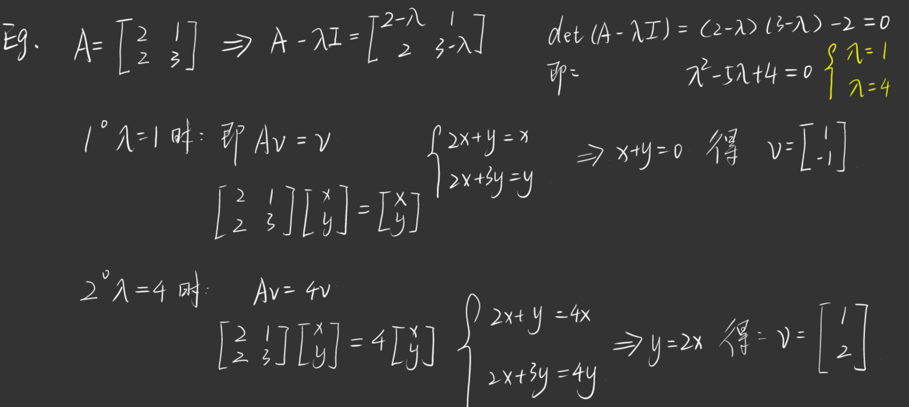
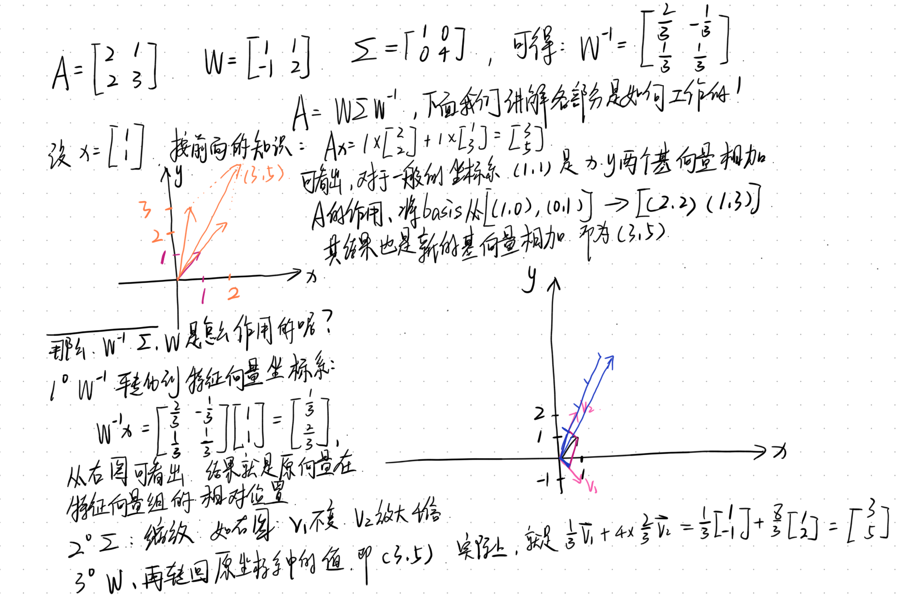
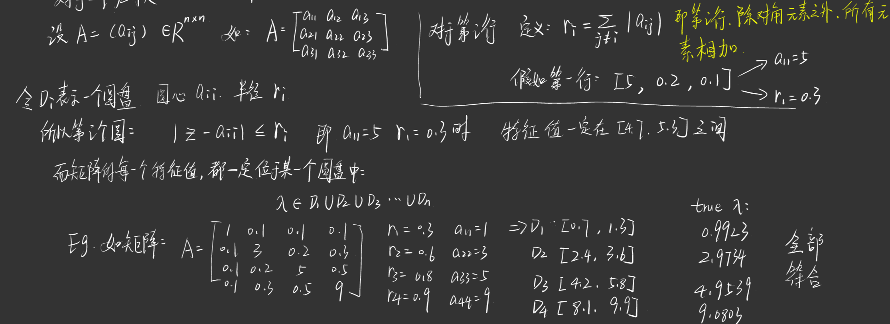

特征分解
设有矩阵A= \begin{bmatrix} 2 & 0\\ 0 & -1 \end{bmatrix}, v= \begin{bmatrix} x\\ y \end{bmatrix},则我们可以得出：Av=\begin{bmatrix} 2x\\ -y \end{bmatrix}
现在我们做以下定义，对于某些向量v，经过矩阵A处理后，其向量方向保持不变，仅仅是长度发生变化，这种向量被称为矩阵A的特征向量，即： Av=\lambda v
如在前例中，我们可以设得： 1. v= \begin{bmatrix} 1\\ 0 \end{bmatrix}，可以得到，Av=\begin{bmatrix} 2\\ 0 \end{bmatrix}=2v,即\lambda=2
- v= \begin{bmatrix} 0\\ 1 \end{bmatrix}，可以得到，Av=\begin{bmatrix} 0\\ -1 \end{bmatrix}=-v,即\lambda=-1
矩阵本质上是一个“空间变换器”，而特征向量就是找到了这个变换器中“不改变方向的特殊方向”。一旦找到这些特殊方向，矩阵对空间的作用就可以被拆解成沿这些方向分别拉伸、压缩或翻转。
如何理解呢？假设在一个二维空间中，一个向量可以由两个方向组合： x = av_1+bv_2 如果，v_1, v_2正好是两个特征向量，那么Ax=A(av_1+bv_2)利用前面的公式，可以得到： Ax=aAv_1+bAv_2 =a\lambda_1v_1+b\lambda_2v_2 可以看出来，矩阵就只是在v_1, v_2方向进行一些伸缩和翻转。
因此，对于一个大型矩阵A，如果能找到某个v_i，满足Av_i=\lambda_iv_i，我们就可以拆解矩阵，分解其拉伸压缩，翻转的功能。
寻找特征值
根据前言，Av=\lambda v，我们可以得到(A-\lambda I)v=0,其中的v肯定不是零向量，故A-\lambda I必须把某方向压缩为0，即det(A-\lambda I)=0
我们利用一个例子来简单讲解一下\lambda的求解过程：

可以得到以下结论： 1. 特征向量就是在矩阵作用下，保持方向的特殊方向。 2. 特征值，就是这个方向被矩阵伸缩的倍数，如果为负值，即反向(翻转)
矩阵分解
延续”寻找特征值”部分的例子，其中A=\begin{bmatrix} 2 & 1\\ 2 & 3 \end{bmatrix},两个特征值与向量为：$ \begin{cases} \lambda_1=1, & v_1=\begin{bmatrix} 1\\ -1 \end{bmatrix} \\ \lambda_2=4, & v_2=\begin{bmatrix} 1\\ 2 \end{bmatrix} \end{cases}$
在这我们设两个矩阵： 1. 构造矩阵：其列向量为A的特征向量，即： W=[v_1, v_2]=\begin{bmatrix} 1 & 1\\ -1 & 2 \end{bmatrix}
- 构造特征值矩阵：其对角线元素为W对应的特征值： \Sigma = \begin{bmatrix} 1 & 0\\ 0 & 4 \end{bmatrix}
根据前面的推理： AW=A[v_1, v_2]=[\lambda_1v_1, \lambda_2v_2]=W\Sigma 可以得到： A=W \Sigma W^{-1}
怎么理解呢？ 1. 对于W^{-1}: 作用是改变坐标，把普通坐标系，转化到特征向量坐标系； 2. 对于\Sigma: 作用是沿着特征向量方向进行缩放； 3. 对于W:作用是转化回原本的坐标

对特征分解进行运算
矩阵的幂：
A^n=A·A···A，如A^2=AA=(W \Sigma W^{-1})(W \Sigma W^{-1})=W \Sigma^2 W^{-1}所以： A^n=W \Sigma^n W^{-1} 而\Sigma ^n=
\begin{bmatrix}
\lambda_1^n & 0 & \cdots & 0 \\
0 & \lambda_2^n & \cdots & 0 \\
\vdots & \vdots & \ddots & \vdots \\
0 & 0 & \cdots & \lambda_m^n
\end{bmatrix}
矩阵求逆：
A^{-1}=W \Sigma^{-1} W^{-1},而\Sigma ^{-1}=
\begin{bmatrix}
\lambda_1^{-1} & 0 & \cdots & 0 \\
0 & \lambda_2^{-1} & \cdots & 0 \\
\vdots & \vdots & \ddots & \vdots \\
0 & 0 & \cdots & \lambda_m^{-1}
\end{bmatrix}, 所以我们可以得到，当矩阵可逆的时候，其所有特征值一定是非零的。
行列式：
det(A)=\lambda_1 ···\lambda_n
秩：
rank(A)=非零特征值的数量
对称矩阵分解
对于没有足够特征向量的矩阵，如A= \begin{bmatrix} 1 & 1\\ 0 & 1 \end{bmatrix},其只有一个\lambda = 1,无法分解，这种情况下我们可以使用Jordan分解或者SVD(奇异值分解)
接下来我们定义以下对称矩阵： A=A^T, 可以得到结果：$ A=W W^{-1}=W W^T $
对于实对称矩阵: 1. 足够多的特征向量； 2. 所有特征值都是实数； 3. 特征向量可以正交。
针对第三点，我们可以从WW^{-1}=I得到，WW^T=I，这样可以说明，两个各不相同的特征向量进行点积运算的时候，其结果为0，即正交。
得到以下结论，W^{-1}=W^T的时候，我们可以说各特征向量相互正交。
Gershgorin 圆盘定理
对于一个规模很大的矩阵，特征值往往很难求出，针对这种情况，我们只需要知道大概的数值即可。 具体内容见下图：

值得注意的是，这种方法仅仅适用于对角元素明显大于其他部分元素的情景。
我们有一些小结论：
- 对于一个大型的随机矩阵A, 其中元素相互独立，且a_{ij}~N(0, 1)，其\lambda_{max}=\sqrt n
奇异值分解(SVD)
下面我们会简要的介绍一下SVD。
由于特征值分解仅仅适用于方阵，但是实际应用中，大多数数据对应的矩阵都不是方阵，矩阵可能是有很多的0的稀疏矩阵，存储量极大且浪费空间，这时候就需要提取主要特征。奇异值分解 是将任意较复杂的矩阵用更小、更简单的 3个子矩阵的相乘表示 ，用这3个小矩阵来描述大矩 阵重要的特性。这一点于特征值分解一致。
即设A \in C^{m×n}，存在酉矩阵U \in C^{m×m}, V \in C^{n×n}，使得A=U \Sigma V^H
其中H表示为复共轭转置，即U^HU=UU^H=I
设 $ A^{mn},(A)=r, $ 设 A^H A的特征值为 \lambda_1\geq\lambda_2\geq\cdots\geq\lambda_r>0, \qquad \lambda_{r+1}=\lambda_{r+2}=\cdots=0, 则矩阵 A 的奇异值为 \sigma_i=\sqrt{\lambda_i}, \qquad i=1,2,\ldots,r.
因此，矩阵 A 的奇异值分解为 A = U \begin{bmatrix} \sigma_1 & & & & 0\\ & \sigma_2 & & & \vdots\\ & & \ddots & & \\ & & & \sigma_r & \\ 0 & \cdots & & 0 & 0 \end{bmatrix} V^H.
可能对于复线性空间有点难理解，那么对实数矩阵A_{m×n}, 我们不能求其特征值，但对于A^TA和AA^T分别为n阶和m阶对称方阵，他们的秩R(A^TA)=R(AA^T)=R(A), 且两个对称矩阵的非零特值相同，对称矩阵的特征址矩阵是正交矩阵，特征值均为正实数，因此可求出特征值的平方根–奇异值
\boxed{\sigma_i=\sqrt{\lambda_i\left(A^H A\right)}=\sqrt{\lambda_i\left(A A^H\right)}}
| 矩阵 | 别称 | 维度 | 计算方式 | 含义 |
|---|---|---|---|---|
| U 矩阵 | A 的左奇异矩阵 | m 行 m 列 | 列由 AA^T 的特征向量组成，且特征向量为单位向量 | 包含了有关行的所有信息（代表自己的观点） |
| \Sigma 矩阵 | A 的奇异值矩阵 | m 行 n 列 | 对角元素为 \sigma_i=\sqrt{\lambda_i}，其中 \lambda_i 为 AA^T 或 A^TA 的特征值，并按降序排列，值越大可以理解为越重要 | 记录 SVD 过程（一种日志） |
| V 矩阵 | A 的右奇异矩阵 | n 行 n 列 | 列由 A^TA 的特征向量组成，且特征向量为单位向量 | 包含了有关列的所有信息（代表自己的特征） |